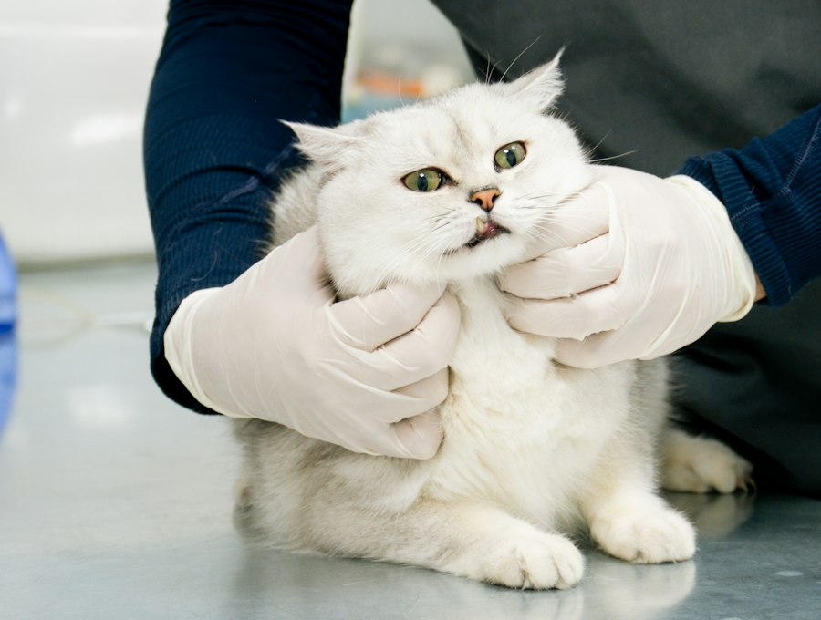
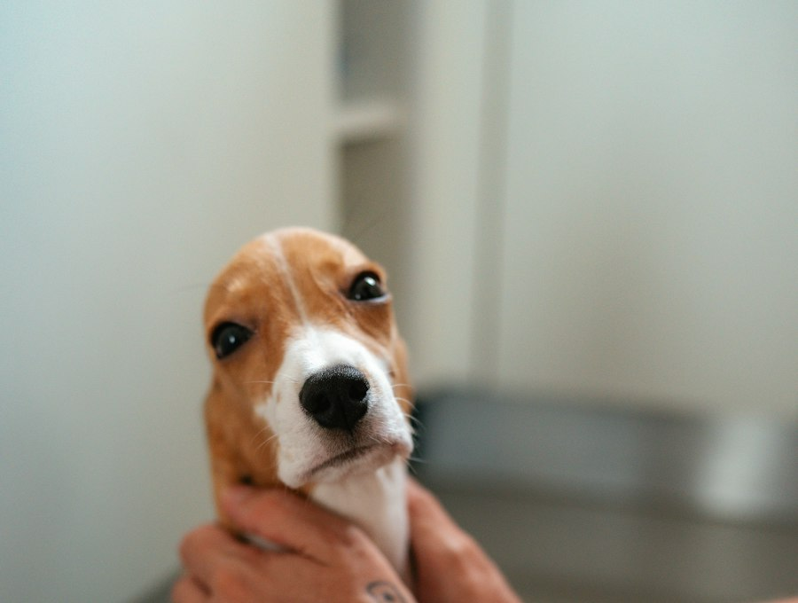
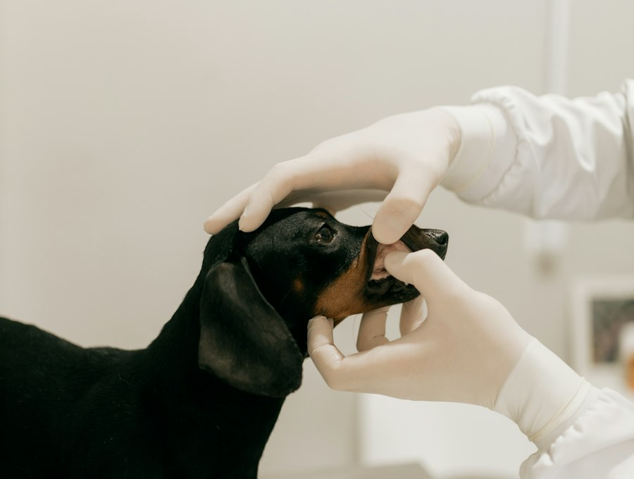
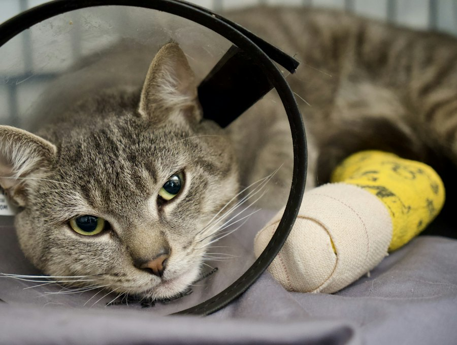
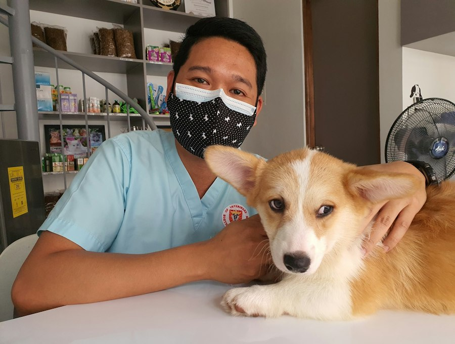
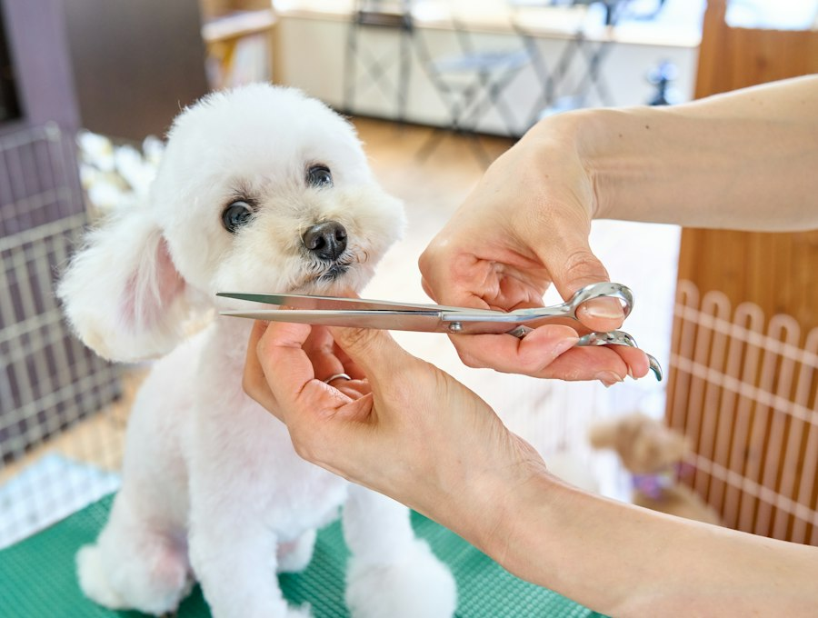

Our Services
From first puppy and kitten visits to senior care, surgery, and a fresh new haircut — everything your pet needs, under one roof.

Wellness Exams
Regular wellness exams are the foundation of a long, healthy life. Pets are experts at hiding discomfort, and many common conditions — from dental disease to arthritis, kidney changes, and thyroid problems — develop quietly long before you notice symptoms at home. A thorough head-to-tail exam gives our veterinarians the chance to catch these changes early, when they are easier and more affordable to treat.
During your visit, we take the time to get to know your pet and listen to your questions. We check weight and body condition, listen to the heart and lungs, examine the eyes, ears, skin, coat, and teeth, and gently feel the abdomen, joints, and lymph nodes. Depending on your pet's age and lifestyle, we may recommend bloodwork, a urine test, or a parasite screening to get a clearer picture of what's happening inside.
What's included
- Complete nose-to-tail physical exam
- Weight, nutrition, and body condition review
- Parasite prevention plan for fleas, ticks, and heartworm
- Age-appropriate lab work and screenings
- A personalized care plan you can take home
We recommend a wellness exam once a year for most adult dogs and cats, and twice a year for seniors (usually seven years and older) or pets with ongoing health conditions. Puppies and kittens need more frequent visits during their first months as they grow and complete their vaccine series.
Wellness visits are also a great time to talk about behavior, training, travel plans, or changes you've noticed at home. No question is too small — the more we know about your pet's daily life, the better we can care for them.
Book a Wellness Exam
Vaccinations
Vaccines are one of the simplest and most effective ways to protect your pet from serious, sometimes life-threatening diseases. They work by training your pet's immune system to recognize and fight specific infections before exposure ever happens — keeping your pet, your family, and other animals in the community safer.
Not every pet needs every vaccine. Our veterinarians tailor a vaccination plan to your pet's age, health, and lifestyle. Core vaccines are recommended for all dogs and cats, while lifestyle vaccines depend on factors such as whether your dog visits daycare or boarding facilities, hikes in wooded areas, or whether your cat spends time outdoors.
What's included
- Core vaccines for dogs, including rabies, distemper, and parvovirus
- Core vaccines for cats, including rabies and feline distemper
- Lifestyle vaccines such as Bordetella, leptospirosis, Lyme, and feline leukemia
- Complete puppy and kitten vaccine series
- Reminders by text or email so you never miss a booster
Before every vaccine, your pet receives a quick health check to make sure they're well enough to be vaccinated. Most pets experience no side effects at all; a few may feel a little sleepy or sore for a day. We'll explain what to watch for, and we're always just a phone call away if you have concerns.
New to the clinic? Bring any previous vaccine records with you, or ask your former veterinarian to send them over. We'll review your pet's history, avoid unnecessary repeat shots, and set up a simple schedule that keeps protection up to date.
Book Vaccinations
Dental Care
Dental disease is one of the most common health problems we see — most dogs and cats show signs of it by the age of three. Plaque and tartar build-up can lead to painful gums, loose teeth, and bad breath, and bacteria from an unhealthy mouth can affect the heart, kidneys, and liver over time.
Our dental care starts with an oral exam during every wellness visit. When a professional cleaning is needed, it is performed under carefully monitored anesthesia so we can safely clean above and below the gumline, take dental X-rays, and check every tooth for problems hidden beneath the surface. A dedicated team member watches your pet's vital signs from start to finish.
What's included
- Oral exam and dental charting
- Scaling and polishing above and below the gumline
- Digital dental X-rays
- Tooth extractions when necessary
- Home-care coaching, including brushing tips and dental chews
Watch for warning signs such as bad breath, red or bleeding gums, drooling, dropping food, or pawing at the mouth. Pets rarely stop eating because of dental pain, so regular checkups are the best way to keep their smiles healthy and comfortable for years to come.
Between visits, a little home care goes a long way. Brushing a few times a week with a pet-safe toothpaste, offering vet-approved dental chews, and scheduling regular checkups can slow tartar build-up and help your pet avoid painful problems later. Our team is always happy to show you easy brushing techniques that work for even the wiggliest pets.
Book Dental Care
Surgery
When your pet needs surgery, you want to know they're in safe, experienced hands. Our surgical suite is equipped with modern anesthesia and monitoring equipment, and every procedure is performed with a strong focus on safety, pain management, and a gentle recovery.
Before any procedure, we perform a pre-surgical exam and recommend bloodwork to make sure anesthesia is as safe as possible for your pet. During surgery, a trained technician monitors heart rate, breathing, oxygen levels, blood pressure, and temperature. Afterward, your pet recovers in a warm, quiet area with close supervision until they're ready to go home.
What's included
- Spay and neuter procedures
- Soft-tissue surgery, such as lump and mass removals
- Wound repair and laceration care
- Foreign-body removal
- Pain management before, during, and after surgery
- Detailed at-home recovery instructions and follow-up visits
We know surgery can feel stressful for pet parents, too. Our team will walk you through every step, answer your questions, and call you with an update as soon as your pet is awake. Most pets go home the same day with medication and a clear plan for a comfortable recovery.
For planned procedures, we'll give you simple instructions to follow beforehand, such as when to stop food and water the night before. At pick-up, we review medications, activity limits, and incision care with you, and we schedule a recheck visit to make sure healing is right on track. If anything seems off once you're home, call us — we're here to help.
Request a Surgery Consult
Emergency Care
Emergencies never happen at a convenient time. When your pet is hurt or suddenly unwell, our team is here to provide fast, calm, and compassionate care. During clinic hours, urgent cases are seen as quickly as possible, and our 24/7 emergency line connects you with guidance whenever you need it.
When you arrive, a team member will assess your pet right away and prioritize care based on how serious the situation is. With in-house X-ray, ultrasound, and laboratory testing, we can diagnose problems quickly and begin treatment without delay. We'll keep you informed and explain your options every step of the way.
Call us right away if you notice
- Difficulty breathing or choking
- Bleeding that won't stop, or deep wounds
- Suspected poisoning, such as chocolate, medications, or antifreeze
- Repeated vomiting or diarrhea, especially with lethargy
- Trouble urinating, collapse, or seizures
- A swollen, hard belly or unproductive retching
If you think your pet is having an emergency, call before you leave so our team can prepare for your arrival. Stay calm, keep your pet as still and comfortable as possible, and bring any packaging if you suspect they swallowed something harmful.
Our team also provides follow-up care after an emergency visit, including rechecks, bandage changes, medication adjustments, and ongoing monitoring. If your pet needs specialized overnight care, we'll arrange a smooth transfer to a trusted 24-hour hospital nearby and share all of their records, so nothing is missed.
Call (555) 000-0000
Grooming
Regular grooming does far more than keep your pet looking good. A clean, well-maintained coat helps prevent painful mats, skin infections, and overgrown nails, and every session gives our team the chance to spot lumps, skin irritation, parasites, or ear problems early.
Our groomers use gentle, fear-free handling techniques and take breaks whenever a pet needs them. Because grooming happens inside a veterinary clinic, nervous pets, seniors, and those with medical conditions can be groomed with a veterinarian close by if anything comes up. We use pet-safe shampoos chosen for your pet's skin and coat type.
What's included
- Warm bath with a shampoo suited to your pet's skin
- Blow-dry and thorough brush-out
- Breed-specific haircuts and trims
- Nail trimming and paw-pad care
- Ear cleaning
- De-shedding treatments and mat removal
Most dogs benefit from professional grooming every four to eight weeks, depending on their breed and coat. Cats, rabbits, and other small pets are welcome too — just let us know about any special needs when you book, and we'll make sure their visit is calm and comfortable.
Between appointments, regular brushing at home helps keep your pet's coat healthy and makes each grooming visit easier. We're happy to recommend the right brush, shampoo, and routine for your pet. Ask about combining grooming with a wellness exam or nail trim to save you an extra trip.
Book GroomingNot sure what your pet needs?
Give us a call — our friendly team is happy to help you choose the right visit.